The purpose of the metagam package is to meta-analyze generalized additive models (GAMs), including generalized additive mixed models (GAMMs). The main application we have in mind is the case in which researchers at different locations have the same type of data, but are not allowed to share the rawdata. The metagam package offers an opportunity to gain statistical power by fitting similar GAMs to the data in each location, removing individual participant data from the model objects such that they can be shared to a common location, and finally obtaining a meta-analytic GAM fit from the individual models. The methodology is described in detail in a paper which will soon (as of January 2020) be public.
The reason the methods in metagam are needed, is that current meta-analytic approaches mainly focusing on combining model parameters, e.g., regression coefficients or correlations. This approach works well in many cases, but there are many important problems for which it is impractical or impossible to use parametric models. GAMs offer a flexible way to fit various functional forms Wood (2017). Some current meta-analytic approaches to GAMs have required exactly the same basis functions and knot placement to be used in the model fitted to each dataset, but this is in general suboptimal and when the range of some explanatory variable differs between cohorts, it may often lead to models that are not identifiable. metagam hence instead combines the model fits (predictions) over some grid specified by the user.
Assume some data of interest are located in three different cohorts. In order to increase statistical power and hence be more able to detect relationships in the data, we would ideally fit a GAM to all three datasets combined, using a model on the form y ~ s(x0) + s(x1) + s(x2), where y is an outcome of interest and x1 and x2 are explanatory variables. The smooth functions s() allow the outcome to vary nonlinearly as a function of each explanatory variable. When all three datasets are not available in a single location, we cannot fit a GAM using this mega-analytic approach. The metagam package provides a flexible solution to this problem, which here will be illustrated.
We start by simulation three datasets using the gamSim() function from mgcv.
library(metagam) library(mgcv) ## simulate three datasets set.seed(123) datasets <- lapply(1:3, function(x) gamSim(scale = 3, verbose = FALSE))
In each data location, we assume a GAM with the generic form y~s(x0)+s(x1)+s(x2) is fit to the data. Notably, model parameters like knot locations, number of basis functions, and smoothing method does not need to be identical in each separate fit. Instead, the parameters can be optimized independently to fit the data in each location.
Here is an example:
## Data location 1 fit1 <- gam(y ~ s(x0, k = 8, bs = "cr") + s(x1, bs = "cr") + s(x2, bs = "cr"), data = datasets[[1]]) ## Data location 2, use P-splines for the first and third term fit2 <- gam(y ~ s(x0, bs = "ps") + s(x1, k = 20, bs = "cr") + s(x2, bs = "bs"), data = datasets[[2]]) ## Data location 3, use maximum likelihood for smoothing fit3 <- gam(y ~ s(x0, bs = "cr") + s(x1, bs = "cr") + s(x2, bs = "cr"), data = datasets[[3]], method = "ML")
The gam objects fit1, fit2, and fit3 contain individual participant data in various forms, and hence there are many cases in which these should not be shared. The function strip_rawdata() from metagam removes all such rawdata. We here illustrate how this function can be applied at each data location in order to obtain a model fit that can be shared.
## Data location 1 fit_no_raw1 <- strip_rawdata(fit1) ## Data location 2 fit_no_raw2 <- strip_rawdata(fit2) ## Data location 3 fit_no_raw3 <- strip_rawdata(fit3)
Now assume that the objects fit_no_raw1, fit_no_raw2, and fit_no_raw3 have been gathered in a single location. First, we can inspect each of the objects.
summary(fit_no_raw1) #> GAM stripped for individual participant data with strip_rawdata(). #> For meta-analysis of smooth terms, use the following identifiers: s(x0), s(x1), s(x2). #> #> Original output for gam object: #> #> Family: gaussian #> Link function: identity #> #> Formula: #> y ~ s(x0, k = 8, bs = "cr") + s(x1, bs = "cr") + s(x2, bs = "cr") #> #> Parametric coefficients: #> Estimate Std. Error t value Pr(>|t|) #> (Intercept) 8.0156 0.1553 51.62 <2e-16 *** #> --- #> Signif. codes: 0 '***' 0.001 '**' 0.01 '*' 0.05 '.' 0.1 ' ' 1 #> #> Approximate significance of smooth terms: #> edf Ref.df F p-value #> s(x0) 3.746 4.565 5.782 8.48e-05 *** #> s(x1) 2.466 3.070 49.388 < 2e-16 *** #> s(x2) 7.493 8.416 33.457 < 2e-16 *** #> --- #> Signif. codes: 0 '***' 0.001 '**' 0.01 '*' 0.05 '.' 0.1 ' ' 1 #> #> R-sq.(adj) = 0.537 Deviance explained = 55.3% #> GCV = 10.013 Scale est. = 9.645 n = 400
We can now perform a meta-analysis of these fits using the metagam() function. We gather them in a list:
models <- list(cohort1 = fit_no_raw1, cohort2 = fit_no_raw2, cohort3 = fit_no_raw3)
It is typically most convenient to analyze a single smooth term at a time. We start with the term s(x0), and set grid_size=100 to get 100 equally spaced values of x0 within the range of values encountered in the three model fits. The summary method prints out some information as well as meta-analytic p-values for the term.
metafit <- metagam(models, terms = "s(x0)") summary(metafit) #> Meta-analysis of GAMs from 3 cohorts, using method FE. #> #> Smooth terms analyzed: s(x0) . #> #> Meta-analytic p-values of smooth terms: #> #> Test s(x0) #> ---------------------- ---------- #> Stouffer's sum of z 1.435e-05 #> Edgington's sum of p 1.186e-04 #> Wilkinson's maximum p 2.717e-04 #> Wilkinson's minimum p 2.545e-04 #> logit p method 2.070e-05 #> Fisher's sum of logs 1.906e-05
The default plotting function shows the fits on the separate datasets together with the meta-analytic fit.
plot(metafit)

Dominance plots and heterogeneity plots can also be created. These are described in separate vignettes.